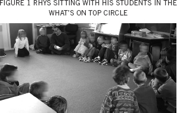
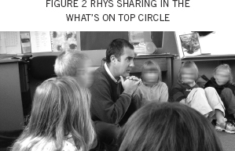

Developing a community of learners through inquiry
RHYS HILL and ALISON SEWELL
KEY POINTS
• National and international research shows that taking a sociocultural approach to teaching, for example by developing a learning community in the classroom, promotes learning. This challenges New Zealand teachers to expand their pedagogical repertoires.
• By engaging in a process of “teaching as inquiry”, the teacher in this article transformed his teaching practice to incorporate sociocultural principles.
• Sharing thoughts and emotions through a sharing circle built responsive and reciprocal relationships with students, which laid the basis for shared learning.
• The process of change involved some personal struggle as the teacher sought a new approach and experimented with ways of teaching that were initially uncomfortable—but ultimately rewarding.
• Carrying out their inquiry with a university researcher and other teachers in a professional community of practice supported the teacher to challenge their current beliefs and create change.
Letting go of traditional “one-sided” teaching practices and moving towards power sharing and learning with students can be a daunting and challenging process. This article describes one teacher’s journey towards a sociocultural approach and what supported him.
Recent publications highlight the importance of facilitating shared learning (Ministry of Education, 2007) and of developing and sustaining community (Aitken & Sinnema, 2008). These new directions are challenging teachers to broaden their pedagogical repertoires and to inquire into the impact of these changes on their students’ learning. This article explores how a primary school teacher engaged in an inquiry process with a university researcher, using evidence from his classroom practice as well as from published research. The article reports on how “teaching as inquiry” supported the development of new sociocultural perspectives and new practices of a learning community. Two key conclusions are made. First, we argue the importance of professional learning communities where teachers can engage in their own inquiries and confront taken-for-granted pedagogical perspectives. Second, we highlight the value to children’s learning of developing responsive and reciprocal relationships in order to support their engagement in shared learning.
Children’s learning is promoted when responsive, reciprocal power-sharing relationships are developed (Aitken & Sinnema, 2008; Alton-Lee, 2003; Bishop, 2008; Mercer & Littleton, 2007; Rogoff, 2003). However, such a sociocultural approach remains largely uncommon in New Zealand’s primary classrooms (Bourke, 2004; Nuthall, 1999, 2002). Traditional views see learning as a one-sided activity: either teachers are actively transmitting information or organising activities, or children are actively acquiring information and exploring their environment. Teachers and children are not active together. From a sociocultural perspective, learning is a joint process in which teachers and children participate together in a learning community—both “contribut[ing] support and direction in shared endeavors” (Rogoff, Matusov, & White, 1996, p. 389).
This article addresses the question: How can teachers change their engagement from traditional one-sided pedagogies to include a sociocultural approach? It describes one teacher’s journey as he engaged in collaborative action research. His inquiry into his practice, and the shifts he made, is reported here using the model “teaching as inquiry” (Ministry of Education, 2007, p. 35).
The teacher’s inquiry outlined in this article comes from a doctoral research project (Sewell, 2006) that investigated the development of a community of learning in four Years 3/4 classrooms by observing teachers’ and children’s transformations of participation (Rogoff et al., 1996, p. 388). Using a collaborative action research methodology, the teachers, Tiare, Amy, Kelly and Rhys (first author) met regularly with the university researcher, Alison (second author), to reflect together on their pedagogical perspectives and practices and to consider ways they could implement a sociocultural approach to learning in their classrooms. This community of practice (Wenger, 1998) was established to support the teachers’ shared reflections, their goal setting for change, their action and their collection and analysis of data to provide evidence about the impact of changes.
The group used the following sociocultural principle to guide their discussion about the type of teaching practice they wanted to develop:
Creat[e] instruction that builds on children’s interests in a collaborative way, where learning activities are planned by children as well as adults, and adults learn from their own involvement as they help children learn. (Turkanis, Bartlett, & Rogoff, 2001, p. 226) This principle was broken into four guiding principles:
• Teachers and children are all learners.
• Teachers and children share responsibility for learning.
• Teachers and children share decisions about learning.
• Teachers and children have learning conversations.
The “teaching as inquiry” model, described in The New Zealand Curriculum (Ministry of Education, 2007), is used as a framework for discussion in this article. The model has three phases: focusing, teaching and learning. The focusing inquiry draws from curriculum requirements, and, most importantly, from children’s learning needs and experiences, to establish baseline data and to prioritise the overall inquiry direction. The subsequent teaching inquiry identifies evidence from published research and from the teacher’s past practice to plan for change. The learning inquiry investigates the success of the teaching action taken in relation to the desired outcomes for students’ learning and considers next steps.
While the four teachers embarked on very different inquiries—each supported by their professional community of practice—attention is only given here to Rhys’ inquiry process. Following a career in the corporate world, Rhys completed his Graduate Diploma of Teaching. In his fourth year of teaching he was leading and teaching within a Years 3/4 team in a large, urban, decile 3 primary school. The following two cycles of teaching as inquiry are told from Rhys’ perspective.
My focusing inquiry helped me to reflect on my taken-for-granted perspectives of teaching and learning, as well as to consider aspects of my pedagogy that were important to me. I was at a stage of teaching where I was confident in my abilities and what I was “doing” in the classroom, but I had not questioned what an effective classroom looked like and what learning actually was. My own experiences of learning at school and university had “taught” me that learning was about receiving and “regurgitating” information. Successful learning was quiet and orderly, with the teacher maintaining control: the teacher’s role was to be the “boss”. The role of power and who held it was unquestioned—it sat with the teacher. My classroom was not a place for power sharing. As I said in an interview with Alison at the time: “I tell my kids that my classroom is not a democracy. I’m the boss and I’m not going to be challenged in that and the kids need to know that.”
I was being affirmed by colleagues and parents for being in control of my class. I was judged for the look and sound of control: children in seats, the classroom being quiet, orderly lines as we moved around the school. This is what I thought effective learning looked like.
As part of Alison’s research I was introduced to some guiding principles of a sociocultural approach to practice, as well as new ways of participating in my professional learning. The concept of learning with my students was difficult to grasp. However, I liked the idea of sharing power with them, but how to go about this was initially outside my experience and training. My response was to some extent confounded by my new position as team leader: previous leadership experience had again “taught” me that leadership was about control and being the boss.
My observation of the children revealed their passivity in their learning—they were simply doing the activities I had planned, which led to busy work. I felt the children needed to park issues and feel safe so we could move on ready to learn. I knew the children’s lives outside the classroom were rich in learning opportunities and I wanted to bring these experiences into the classroom and use them as a basis for learning.
I pondered the kinds of evidence-based strategies I might try, which signalled the beginning of my teaching inquiry. I was intrigued by the seeds Alison had sown about sociocultural theory and practice through the short excerpts we looked at illustrating how teachers in a North American school had developed their classrooms as learning communities (Rogoff, Turkanis, & Bartlett, 2001). I read how they had used a sharing circle to bring their out-of-school experiences into the classroom. I was also challenged by Bishop’s (1999) research and his concept of seeing learners as culturally located beings. Through ongoing conversations in our professional community, and with my wife, Raewynne, who is also a primary teacher, I thought about how I might make connections to the children’s diverse cultures and life experiences. Together we considered changing the typical oral language “show and tell” strategy. This one-sided transmission of information about a favourite toy or other item held potential to be transformed into a shared learning activity where our out-of-school experiences became the basis of forming our own learning community.
I designed a strategy called “What’s on Top” where children sat in a circle and, instead of talking about an artefact, they shared some aspect of their lives. This was not to be a typical “show and tell” session. It was an opportunity for the children to reveal more of their identity—of who they were. A time limit was given, speaking was voluntary but active listening was compulsory. The children mainly talked about everyday events in their lives but with little emotional connection to each other. The strategy tended to be a mechanical child-initiated transmission of information—we were not engaging as a community. I still saw myself as being in control, organising and facilitating the “doing” of this activity. My first learning inquiry finished with the realisation that I was not engaging, nor learning with the children. I was simply a passive facilitator.
I needed to actively engage in the sharing of our out-of-school experiences and model the kinds of interpersonal skills required to participate and contribute in the sharing circle. I had to learn how to develop and use this sharing strategy with the children; it had to become our What’s on Top. This was the start of my second focusing inquiry. I wondered how I could come out of my role as a passive orchestrator and become active in my partnership with the children. I wanted to be present in the circle—not as a teacher worrying about control, but as part of the group. I thought about my physical positioning in the circle: did I need to come out of my teacher’s chair to sit with the children at their level? I had to “let go” of explicitly controlling the activity. I wanted to model “learning together” in an authentic way. I wanted this to be a safe space for children to learn to share, to listen and to respond to the emotions behind what was shared.
My teaching inquiry began as I talked within my community of practice about how I might develop the What’s on Top circle. I realised I had not been ready to let go, I hadn’t had the right head (and heart) space to be present and open with the children. Alison shared an excerpt with me about a teacher who had used a sharing circle and how important it had become in the daily routine. Now I was ready to join the children on the floor as another member of the group. I made myself get out of my teaching chair and get down onto the mat with them. I typically started the ritual by saying: “Let’s catch up on each other!” The children would shuffle for space in the circle and look at the wall chart to see whose turn it was to start. The first speaker shared what was “on top” for him or her. When finished they touched the knee of the neighbouring child. Some children talked about playing with a friend after school, going to soccer practice, having tea at Nana’s place; others decided to “pass”. When it came to my turn, I too shared what was on top in my life—how rushed it had been at home this morning, how Sara was starting kindergarten or about Raewynne’s teaching. If a child shared something particularly personal, I made a mental note to work with that child’s group immediately after the circle time. I observed how the children were also taking an active role in this support of their peers; they came to see it as their responsibility to show their care and to be with that child.


Through analysing observations of these changes, I saw the impact on developing and sustaining our learning community. I found evidence in my learning inquiry to show that What’s on Top had enabled us to value what each member of the community brought into our classroom. When I sat on the floor I didn’t need to control, we could share the power. The circle called for honesty, listening, sharing, caring and trusting, which established a way of working together throughout the day. Alison wrote about one observation:
There is a sense of calm that comes from connecting in the circle. As they share and listen, their compassion, love and honesty for each other has the power to lift … it is a genuine sharing of their minds and hearts in response to tragedy, to joy or to just mundane events in their everyday lives. These children hold so much pain and joy, yet the norms of schooling say it is best left at the classroom door so learning can happen.
I noticed the children were sharing their ideas across different learning areas more willingly and honestly, even if that meant they had to disagree with each other. This observation was supported by Alison who talked with the children about their learning. They told her how they: “listened to what others said … shared our ideas … had fun together … disagreed and got a part for everyone” (Sewell, 2006). I came to recognise the emotional work of learning, particularly the emotional challenges of teaching in a community of learners (Evans & Harvey, 2009). Our traditional teacher–student relationship began to transform into a shared interaction as a group of people. I had been able to show myself as someone other than a teacher: I was a Dad and a husband who, like them, had a life beyond the classroom full of highs and lows.
As What’s on Top evolved over a six-month period, we began to respect each other as humans, not just as students or a teacher. The children came to know that I was genuinely concerned about events that transpired in their lives. As one child told Alison: “He cares about us when we are sick or we done wrong” (Sewell, 2006). The children in turn were also genuinely caring for each other—and for me: “I really cared about him [Rhys] being sick. I think mostly everyone did and we didn’t want him to be. He is a special teacher” (Sewell, 2006). Instead of raising their hands, children naturally built on each other’s ideas. The talk was not all coming through me—it became more conversational and collaborative. In retrospect, I can see we were using the key competencies such as managing self and participating and contributing (Ministry of Education, 2007).
I still held my professional responsibilities as a teacher: I had simply shared that power. I came to realise that in doing so, I had not lost power as I had feared, but in fact more power came to exist within our community. I had to remind myself to stop talking—ideas would come from the children. I became confident to wait for them to talk. I didn’t need to fill the spaces, the silences, or provide all the information. It became a legitimate way to teach for me. I was just the tallest kid in the class. It seemed to say that we come together on equal terms: I am your teacher but I am a learner too, and it is important that we share. The children later came to talk about our new mutual roles and responsibilities using an analogy to the body: “we are the feet, he [Rhys] is the ankle … it just feels like he is not the head anymore … he is one of us” (Sewell, 2006).
The following reflection that I wrote four months into the research illustrates the pleasure the children and I came to feel from connecting in the circle each day. It perhaps serves to illustrate our “human quest for connectedness” (Palmer, 1999, p. 8):
We got back from cross country later than expected. After lunch we were discussing what we were meant to be doing and three or four all at once said ‘We forgot What’s on Top.’ It was affirming. It was good. But then this thing in my mind said ‘No, I’m on my way … we’ve got maths … I want to teach here, we’ll do What’s on Top later.’ But then another thought came ‘why wait?’ … The kids just needed to connect with each other. 15 seconds later we were in our circle. It felt natural.
As I began to see learning and teaching through a sociocultural lens, I intentionally created opportunities for children to learn together with me and with each other. What’s on Top was just the first of many ways that evolved to engage in shared learning in the classroom. As I witnessed children become confident to share their experiences, I focused on the use of conversation or what I called “messy talk time” as a means to learn together—both in our community of learners in the classroom and in my professional learning community with colleagues and with Alison. Learning happened in these dialogic spaces, my inquiry led me to see myself as a learner—sometimes with the children and sometimes with my professional peers. Alison now reflects, from her perspective, on my journey of teaching as an inquiry.
It was a struggle to develop shared activity because it required Rhys to let go of his taken-for-granted beliefs about teaching—a role he thought required him to be the decision maker and the fount of all knowledge. He felt the dissonance of letting go these views and the criticism of some teachers for practising from a new pedagogical perspective. As Earl (2007) predicted, rethinking long-held beliefs and practices was a profoundly uncomfortable experience. Yet Rhys’ inquiry, conducted within a supportive professional learning community, enabled him to recognise the teaching traditions he had been following unconsciously and slavishly, and supported him to change his practice. He came to understand the mismatch between his unquestioned and intuitive knowledge of teaching and learning and the kind of teacher he wanted to be.
Learning about sociocultural views challenged him to see learning and teaching as a process of joint participation—of activity with active partners including the teacher, each taking a part. These new perspectives aligned with how Rhys liked to engage with people outside the classroom. He began to align his practice with his new beliefs about teaching. Palmers’ (1998) words rang true: “we teach who we are” (p. 1); Rhys was teaching from a place of authenticity.
Timperley, Wilson, Barrar and Fung (2007) show unequivocally that teacher learning about new pedagogical approaches is one of the most important factors influencing student learning. These researchers also claim that dissonance with teachers’ existing values, beliefs and practices is essential for new learning to occur. Rhys’ inquiry foregrounds many of the qualities that their synthesis of research showed to support professional learning, such as: involvement of external experts, challenge to prevailing discourses, extended opportunities to participate in a professional learning community, integration of theory and practice and engagement in dialogic inquiry.
Aitken and Sinnema’s (2008) synthesis of research complements the findings of Timperley et al. by highlighting the complexity of teachers’ and students’ learning, emphasising that “there is no easy ‘what works’ answer for teachers: what works depends on the context” (p. 52). These authors promote effective teacher learning as being embedded in their own inquiries, where their unquestioned perspectives are challenged and their pedagogical decisions are based on evidence from the classroom and published research.
The evidence generated from Rhys’ inquiry overwhelmingly points to the importance of the children’s (and Rhys’) joint participation in the sharing circle as supporting their ability to be responsive to each other and to engage in the reciprocal connections of a learning community. They learnt to listen to what people had to say, to respect and to build on ideas, agreeing, disagreeing or adding new ideas. Children began to use “cumulative talk” and “exploratory talk” to “interthink” (Mercer & Littleton, 2007) without it being channelled through Rhys. Reciprocity was shown to be the hallmark of the communities of learners that developed in the collaborative action research study (Sewell, 2006); a finding supported by a robust research literatuce (Brown & Campione, 1998; Dalton & Tharp, 2002; Renshaw & Brown, 1997; Rogoff, Bartlett, & Turkanis, 2001). This notion of reciprocity builds on Dewey’s (1916) emphasis on conjoint activity and Vygotsky’s (1978) interest in the mutual embeddedness of the individual and sociocultural world. Reciprocal connections lie at the heart of learning together.
Their sharing circle became the glue that held their community together. It had helped them to establish an emotionally safe environment where their capacity grew to care for others, to respect diversity, to trust a collaborative process and to bring their diverse cultural identity into the classroom. The emotional connections forged initially in the What’s on Top circle developed alongside intellectual, social, physical and spiritual connections (see Sewell, 2009, for discussion of spiritual growth). These connections combined to distinguish shared learning—where teachers and children participate together—from more common adult-led instruction (see the case published in Aitken & Sinnema, 2008, pp. 273– 279). Learning became a socially and culturally shaped process to which others contributed (Rogoff, 2003).
This article has explored how one primary school teacher engaged in an inquiry process with a university researcher to develop a sociocultural approach in his teaching. Two key points were illustrated in this exploration. First, the article promotes the development of professional learning communities where teachers can engage in their own inquiries and confront their taken-for-granted pedagogical perspectives. Second, we argue the value of developing responsive and reciprocal relationships, which formed the basis of engaging in shared learning. In both cases, the teacher is positioned as a learner with children or with professional colleagues. We argue that by positioning the teaching as inquiry process within a professional learning community a far richer analysis of data and a far greater ability to make and sustain change is made possible than if the inquiry were conducted alone. Underpinning this argument is the need for a major shift in perspective, from a view of teaching and learning that essentially separates teachers and students to one that views this as an enterprise of inquiry by teachers and students together. Developing a community of learners is a notoriously difficult enterprise, but is a pedagogical journey worth taking if we are to support students and teachers to become connected, creative, confident life-long learners.
Aitken, G., & Sinnema, C. (2008). Effective pedagogy in social sciences/Tikanga-ā-iwi: Best evidence synthesis iteration. Retrieved from Education Counts: http://www.educationcounts.govt.nz/publications/series/2515/32879/35263
Alton-Lee, A. (2003). Quality teaching for diverse students in schooling: Best evidence synthesis. Wellington: Learning Media.
Bishop, R. (1999). Changing power relations in education: Kaupapa Māori messages for mainstream institutions. In C. McGee & D. Fraser (Eds.), The professional practice of teaching (2nd ed., pp. 201–239). Palmerston North: Dunmore Press.
Bishop, R. (2008). A culturally responsive pedagogy of relations. In C. McGee & D. Fraser (Eds.), The professional practice of teaching (pp. 154–170). Melbourne South: Cengage.
Bourke, C. (Producer). (2004, 21 February). Interview with Graham Nuthall. Saturday Morning with Kim Hill [Radio broadcast]. Wellington: Radio New Zealand.
Brown, A. L., & Campione, J. C. (1998). Designing a community of young learners: Theoretical and practical lessons. In N. M. Lambert & B. L. McCombs (Eds.), How students learn: Reforming schools through learner centred education (pp. 153–186). Washington DC: American Psychological Association.
Dalton, S., & Tharp, R. G. (2002). Standards for pedagogy: Research, theory and practice. In G. Wells & G. Claxton (Eds.), Learning for life in the 21st century: Sociocultural perspectives on the future of education (pp. 181–194). Oxford: Blackwell.
Dewey, J. (1916). Democracy and education. New York: Macmillan.
Earl, L. (2007). Foreword. In Professional learning and development: Best evidence synthesis iteration (pp. vii–ix). Wellington: Learning Media.
Evans, I. M., & Harvey, S. T. (2009). Emotional climate change. Education Review, 14, 7.
Mercer, N., & Littleton, K. (2007). Dialogue and the development of children’s thinking: A sociocultural approach. Abingdon, UK: Routledge.
Ministry of Education. (2007). The New Zealand curriculum. Wellington: Learning Media.
Nuthall, G. (1999). Learning how to learn: The evolution of students’ minds through the social processes and culture of the classroom. International Journal of Educational Research, 31, 141–251.
Nuthall, G. (2002). Social constructivist teaching and the shaping of students’ knowledge and thinking. In J. Brophy (Ed.), Social constructivist teaching: Affordances and constraints (pp. 43–79). New York: Elsevier.
Palmer, P. J. (1998). The courage to teach: Exploring the inner landscape of a teacher’s life. San Francisco: Jossey-Bass.
Palmer, P. J. (1999). Evoking the spirit in public education. Educational Leadership, 56(4), 6–11.
Renshaw, P., & Brown, R. A. J. (1997). Learning partnerships: The role of teachers in a community of learners. In L. Logan & J. Sachs (Eds.), Meeting the challenges of primary schooling (pp. 200–211). London: Routledge.
Rogoff, B. (2003). The cultural nature of human development. Oxford: Oxford University Press.
Rogoff, B., Bartlett, L., & Turkanis, C. G. (2001). Lessons about learning as a community. In B. Rogoff, C. G. Turkanis, & L. Bartlett (Eds.), Learning together: Children and adults in a school community (pp. 3–20). New York: Oxford University Press.
Rogoff, B., Matusov, E., & White, C. (1996). Models of teaching and learning: Participation in a community of learners. In D. R. Olsen & N. Torrance (Eds.), The handbook of education and human development (pp. 388– 414). Cambridge, MA: Blackwell.
Rogoff, B., Turkanis, C. G., & Bartlett, L. (Eds.). (2001). Learning together: Children and adults in a school community (pp. 3–20). New York: Oxford University Press.
Sewell, A. M. (2006). Teachers and children learning together: Developing a community of learners in a primary classroom. Unpublished doctoral thesis, Massey University.
Sewell, A. M. (2009). Evoking children’s spirituality in the reciprocal relationships of a learning community. International Journal of Children’ s Spirituality, 14(1), 5–16.
Timperley, H., Wilson, A., Barrar, H., & Fung, I. (2007). Professional learning and development: Best evidence synthesis iteration. Wellington: Learning Media.
Turkanis, C., Bartlett, L., & Rogoff, B. (2001). Never-ending learning. In B. Rogoff, C. G. Turkanis, & L. Bartlett (Eds.), Learning together: Children and adults in a school community (pp. 225–244). New York: Oxford University Press.
Vygotsky, L. S. (1978). Mind in society: The development of higher psychological processes. Cambridge, MA: Harvard University Press.
Wenger, E. (1998). Communities of practice: Learning meaning and identity. Cambridge, UK: Cambridge University Press.
RHYS HILL is a senior tutor in the College of Education at Massey University.
Email: R.V.Hill@massey.ac.nz
ALISON SEWELL is a senior lecturer in the College of Education at Massey University.
Email: A.M.Sewell@massey.ac.nz